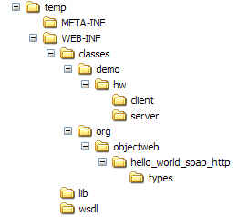
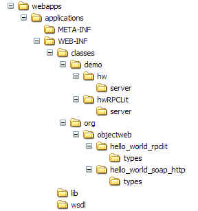

Deploying Celtix into a Servlet Container
Table of Contents
It is possible to deploy a Celtix Web service endpoint into a servlet container such as Tomcat. The sample applications hello_world and hello_world_RPCLit demonstrate this capability. However, these examples illustrate a very basic approach to accomplishing this task. This document will discuss alternative approaches that are more scalable and efficient.
Before discussing these alternative approaches, it is essential that you understand what is needed to deploy a Celtix Web service endpoint into Tomcat. If you need guidance on installing Tomcat, refer to the last section in this document – Installing Tomcat on page 6.
Go to either the hello_world or hello_world_RPCLit examples and follow the instructions to build the .war file. Instructions for performing this task are near the end of the README file. The .war file is generated into the build/war directory. Review the content of the build.xml file in either example. Note that it has targets to create the .war file and to run the client application against the Tomcat hosted Web service. If you would rather run the client using java directly, refer to the instructions in the README file.
If desired, copy one, or both, of the .war files to the Tomcat webapps directory, start Tomcat, and run the client application(s).
Use WinZip to open the .war file and view its contents; then extract the archive to a temporary location.

Alternatively,
if you installed the .war
file(s) into Tomcat, you can view the contents from the webapps
directory; the files will have been extracted into a directory with a
name corresponding to the name of the .war
file (without the .war
extension).
The classes directory includes the code generated from the WSDL file plus any additional files you have added to the application. Note that files from both the server and client application are included. Obviously, the client related files are not needed and will not be included in the alternative approaches discussed later in this document.
The lib directory includes all of the JAR files from your Celtix installation's lib directory, and the wsdl directory contains the WSDL file for the application.
The WEB-INF directory includes two XML files: web.xml and celtix-servlet.xml. You need to understand the content of these files in order to appreciate the alternative approaches described in this document.
The web.xml file is the standard servlet deployment descriptor file while the celtix-servlet.xml file includes configuration information specific to the Celtix Web service endpoint.
Although this file contains the standard servlet configuration information, you need to review its contents.
Note that the servlet class is not actually part of your application. It is pre-written and part of your Celtix installation. This class file is located in the file celtix-rt-<version number>.jar, which is one of the files included in the lib directory.
Also note the <url-pattern> entry celtix. This will become part the the URL that client applications use to invoke on the Web service.
This file contains content specific to the Celtix Web service application.
Notice that all information related to a specific Web service is specified as attributes within the <endpoint> tag. The origin of most of these entries is straight-forward, being derived either from declarations in the WSDL file or from the class names of code generated from the WSDL file. The value for the wsdl attribute is the path to the application's WSDL file relative to the application's installation directory under the Tomcat webapps directory, and the values of the service and port attributes are derived from a combination of the target namespace and service, or port, name specified in the WSDL file.
The value for the url-pattern attribute is the same as the name attribute, but that is not a firm requirement. What is important, however, is that this entry will also become part of the URL that client applications will use to invoke on the Web service.
As you will see later in this document, if you want to deploy multiple Celtix Web service endpoints into the same Tomcat instance, you can simply add additional <endpoint> elements to this XML file.
In order to access the Web service endpoint, client applications need a URL. Since the endpoint is hosted within Tomcat, access will be through the TCP/IP port used by Tomcat and not through the URL specified in the WSDL file. In the Celtix example applications, access to the hello_world Web service deployed into Tomcat uses the URL:
and access to the hello_world_RPCLit Web service uses the URL:
Where:
http://hostname:port refer to the host and TCP/IP port used by Tomcat (for Tomcat, the default port is generally 8080),
/helloworld or /helloworldrpclit are derived from the name of the subdirectory under the Tomcat webapps directory that contains the application (note that this subdirectory has the same name as the .war file),
/celtix is derived from the value of the <url-pattern> entry in the web.xml file, and
/hello_world or /hello_world_rpclit are derived from the value of the url-pattern attribute within the <endpoint> tag in the celtix-servlet.xml file.
You should note how these URLs are specified when running the sample applications. If you choose to run the client application using Ant, the URL is derived from information supplied on the command line combined with information that is already included in the <target name=“client-servlet”...><celtix-run.../></target> tags in the build.xml file. If you run the application using java, you must supply the URL as a command line parameter.
While the approach used in the Celtix example applications demonstrates how Celtix Web services can be deployed into Tomcat, there are some improvements that you can make.
First, the client related files do not need to be included.
Second, the server mainline file is also not required.
Third, many of the Celtix JAR files are not needed.
Fourth, the Celtix JAR files can be moved into the shared/lib subdirectory under your Tomcat installation. With this arrangement, these files are shared by all Celtix applications that are deployed into Tomcat.
And fifth, multiple Web services can be deployed within the same directory hierarchy rather than deploying each service into a unique subdirectory under the Tomcat webapps directory.
Once you have deployed the first Web service, you can deploy additional endpoints into the same directory hierarchy by simply copying the .class files and WSDL file corresponding to the Web service and extending the celtix-servlet.xml file with another <endpoint> entry. There is no need to actually generate the .war file, which will include files (client mainline, server mainline, Celtix JARS, and web.xml) that you do not need.
To illustrate these points, you can rework the hello_world and hello_world_RPCLit demos, combining them into a single servlet application.
If you have not done so already, copy the .war files from the hello_world and hello_world_RPCLit example applications into the Tomcat webapps directory. Start Tomcat, which causes the .war files to be unpacked into subdirectories under webapps. Stop Tomcat and open a command window, or Windows explorer, to the subdirectory (webapps/helloworld) holding one of the hello_world deployed application.
Under the webapps/helloworld/WEB-INF/classes/demo/hw
directory, delete the entire client
subdirectory and the file Server.class
from the server
subdirectory; be certain to leave the .class
file corresponding to the implementation class. Also remove the
Server.class
file from the
webapps/helloworldrpclit/WEB-INF/
classes/demo/hwRPCLit/server
subdirectory.
Delete the following JAR files from the webapps/helloworld/WEB-INF/lib directory: (REVISIT at v1.0 GA.)
Move the contents of the webapps/helloworld/WEB-INF/lib directory into the shared/lib directory. The Celtix JAR files will now be available to all Celtix applications deployed into this Tomcat instance. (REVISIT at v1.0 GA; approach to generating, and contents of, the .war file may change.)
To avoid some confusion, you will first rename the webapps/helloworld directory to webapps/applications. Then you are going to copy the files from the hello_world_RPCLit example into the corresponding subdirectories under webapps/applications. Finally, you will edit the celtix-servlet.xml file, adding a second <endpoint> element that describes the hello_world_RPCLit service. When you restart Tomcat both endpoints will be accessed through a URL beginning with a common context: http://hostname:port/applications/celtix/.
Be certain that Tomcat is not running.
Rename the directory webapps/helloworld to webapps/applications. Expand each subdirectory.
Copy the directory webapps/helloworldrpclit/WEB-INF/classes/demo/hwRPCLit and paste it into the directory webapps/applications/WEB-INF/classes/demo. This step copies the directory containing the endpoint application, specifically the implementation class, from the hello_world_RPCLit example into the combined deployment.
Copy the directory
webapps/helloworldrpclit/WEB-INF/classes/demo/org/objectweb/
hello_world_rpclit
and paste it into the directory
webapps/applications/WEB-INF/classes/demo/orb/objectweb.
This step copies the directory containing the types generated from
the hello_world_RPCLit example's WSDL file into the combined
deployment.

Copy the file webapps/helloworldrpclit/WEB-INF/wsdl/hello_world_RPCLit.wsdl and paste it into the directory webapps/applications/WEB-INF/wsdl.
In a text editor, open the file
webapps/helloworldrpclit/WEB-INF/celtix-servlet.xml
and copy the entire <endpoint>
element. Paste this content into the file
webapps/applications/WEB-INF/
celtix-servlet.xml
and save the file.
Delete the helloworldrpclit subdirectory and the two .war files from the webapps directory.
Restart Tomcat.
Access the hello_world_RPCLit Web service using the URL:
From the celtix/samples/hello_world_RPCLit directory, run the client with the command:
Access the hello_world Web service using the URL:
From the celtix/samples/hello_world directory, run the client with the command:
Since Celtix requires the Java 2 Standard Edition, v5.0 or later, it is essential that you use a version of Tomcat that is compatible with this version of Java. Tomcat v5.5.x is the proper choice and may be downloaded from the Apache Software Foundation site at http://tomcat.apache.org/download-55.cgi.
For Windows, an executable installer is available. Alternatively Windows users can download a .zip file and UNIX/Linux users can download a .tar.gz file. If you download one of the archive files, you can simply extract the file to a convenient location. If you downloaded the Windows executable, double click on its icon to run the installation program. Windows users will generally find the executable installer more convenient to use as it eliminates a number of environment and batch files and sets up some management applications and Start menu items that you may find useful.
Once you have completed the installation, you must be certain that the environment is properly set before you try to launch Tomcat. If you installed Tomcat from one of the archives, then you must set two environment variables. Open a command window and issue the following commands:
If you installed Tomcat using the Windows installer, you only need to set one environment variable. Open a command window and issue the following commands:
Rather than setting these values explicitly in a command window, you may find it more convenient to set these variables through your global configuration.
Once the environment has been set, start Tomcat. If you installed Tomcat using one of the archives, run the script startup.bat or startup.sh. If you installed Tomcat using the Windows installer, start the executable program Tomcat5.exe. Both the scripts and the executable are in the CATALINA_HOME/bin directory.
By default, Tomcat is configured to use TCP/IP port 8080 to service requests. You can confirm that your Tomcat has been properly installed and configured by opening a Web browser and entering http://localhost:8080 into the address text box. If everything is properly set, the browser will display a confirmatory page. If necessary, you can change any of the Tomcat TCP/IP ports used by editing the server.xml file, which is located in the CATALINA_HOME/conf directory.